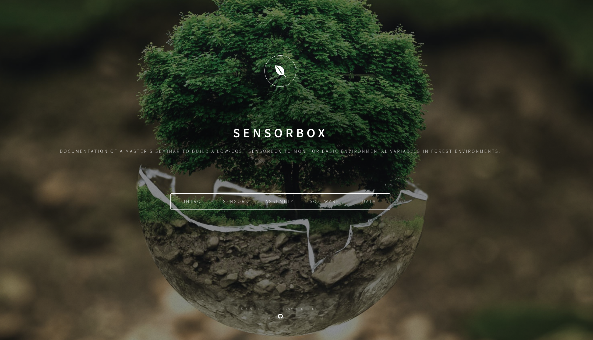

Low-cost SensorBoxes for automated environmental monitoring
2019-07-20 22:10
 Screenshot of the project website.
What is it about?
This project website documents a master’s seminar work at the University of Marburg on a fully automated, low-cost, and self-build environmental sensor unit used in the LOEWE research project Natur4.0. Its core part is a Raspberry Pi 3 (Model B) equipped with sensors to measure incoming radiation, temperature, and humidity, as well as a camera and a microphone to take records of animals in forest environments.
Core Components
- Raspberry Pi 3 (B)
- Raspberry Pi Camera Module v2.1
- SF-555 Microphone (Foxnovo)
- DHT22-AM2302 Temperature and Humidity Sensor
- TSL2591 High Dynamic Range Digital Light Sensor
- KY-024 Hall Sensors
- DS3231 Real-Time Clock
- PowerBank and Wireless Charging Pads
What it can do!
The SensorBox is a fully automated sensing unit that can be used in conjunction with a cable car mounted on specific trees to monitor environmental variables on a vertical gradient within forest structures. There is a need to regularly charge the batteries on the ground station and in case of the presence of a WLAN infrastructure, the SensorBox can send the collected data to another station. It can help to collect data on valuable parameters which can be used together with remotely sensed imagery, e.g., by UAVs, to predict the spatial distribution of these parameters below the canopy cover.
Check it out here or follow the link to GitHub to explore the source code of the website. Note that the content shown here comes from a student project and only covers the status during our two-week seminar. Check out the official documentation for more recent information.